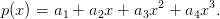
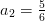
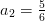
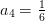
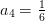

6.1 Interpolação polinomial
Interpolação polinomial é um caso particular do problema geral de interpolação, no qual a família de funções é constituída de polinômios. Para o problema ser bem determinado é necessário restringirmos o grau dos polinômios.
Observe que para o problema ser bem determinado, é necessário restringirmos
o grau dos polinômios. Dado um conjunto de  pontos a serem interpolados
pontos a serem interpolados
 ,
,  para
para  , a família de polinômios
, a família de polinômios  deve ser
escolhida, onde:
deve ser
escolhida, onde:
 |
i.e., a família dos polinômios reais de grau menor ou igual a  .
.
O Exemplo 6.0.2 discute um dos casos mais simples de interpolação polinomial, o qual consiste em interpolar uma reta por dois pontos. Neste caso, a família de funções consiste de polinômios de grau 1. Se buscarmos interpolar uma parábola pelos dois pontos dados, o problema fica subdeterminado, pois existem infinitas parábolas que passam por dois pontos dados. Além disso, se buscarmos interpolar uma reta por três pontos dados, o problema estaria sobredeterminado e poderia não ter solução se os pontos não fossem colineares. Veja o Exercício 6.1.3.
Assim, dado um conjunto com  pontos
pontos  , chamamos de
polinômio interpolador o polinômio de grau menor ou igual a
, chamamos de
polinômio interpolador o polinômio de grau menor ou igual a  que
interpola os pontos dados.
que
interpola os pontos dados.

 ,
,  ,
,
 ,
,  . Veja o Exemplo
. Veja o Exemplo  ,
,  ,
,  ,
,  .
.
Solução. Como o conjunto consiste de 4 pontos, o polinômio interpolador deve ser da forma:
 |
As condições de interpolação são ,  , o que nos leva ao
sistema linear:
, o que nos leva ao
sistema linear:
|
|
cuja solução é  , ,
, ,  e
e  . Portanto, o polinômio
interpolador é . Veja Figura 6.2.
. Portanto, o polinômio
interpolador é . Veja Figura 6.2.
No Scilab, podemos encontrar o polinômio interpolador e esboçar seu gráfico com os seguintes comandos:
-->yi = [1 2 4 8]’;
-->A = [xi.^0 xi.^1 xi.^2 xi.^3];
-->a = inv(A)*yi;
-->p = poly(a,’x’,’c’)
p =
3
1 + 0.8333333x + 0.1666667x
-->xx = linspace(-0.5,3.25);
-->plot(xi,yi,’ro’,xx,horner(p,xx),’b-’);xgrid

Teorema 6.1.1. Seja  um conjunto de
um conjunto de  pares ordenados de
números reais tais que
pares ordenados de
números reais tais que  se
se  , então existe um único polinômio
, então existe um único polinômio
 de grau
de grau  ou inferior que passa por todos os pontos dados, isto
é,
ou inferior que passa por todos os pontos dados, isto
é,  .
.
 ,
,
 ,…,
,…,  do polinômio
do polinômio

 é equivalente a resolver o sistema linear com
é equivalente a resolver o sistema linear com  equações e
equações e  incógnitas dado por
incógnitas dado por 

 cujo
determinante é dado por
cujo
determinante é dado por


Esta abordagem direta que usamos no Exemplo 6.1.1 e na demonstração do Teorema 6.1.1 se mostra ineficiente quando o número de pontos é grande e quando existe grande variação nas abscissas. Neste caso a matriz de Vandermonde é mal condicionada (ver [6]), acarretando um aumento dos erros de arredondamento na solução do sistema.
Uma maneira de resolver este problema é escrever o polinômio em uma base que produza um sistema bem condicionado.
Exercícios
E 6.1.1. Encontre o polinômio interpolador para o conjunto de pontos
 ,
,  ,
,  ,
,  . Então, faça um gráfico com os
pontos e o polinômio interpolador encontrado.
. Então, faça um gráfico com os
pontos e o polinômio interpolador encontrado.
Resposta.  .
.
 ,
,  ,
,  ,
,  .
.
Resposta.  .
.
- Existem infinitas parábolas que interpolam dois pontos dados
 , com
, com  .
.
- Não existe reta que interpola os pontos
 .
.
- Não existe parábola de equação
 que interpola
dois pontos dados
que interpola
dois pontos dados  , com
, com  . Mas, existem
infinitas parábolas de equação
. Mas, existem
infinitas parábolas de equação  que interpolam
estes pontos.
que interpolam
estes pontos.
Resposta.
- Uma parábola de equação
 que interpola os pontos deve satisfazer o sistema:
que interpola os pontos deve satisfazer o sistema:

Sem perda de generalidade, para cada
 dado, temos:
dado, temos:

o qual tem solução única, pois
 . Ou seja, para cada
. Ou seja, para cada  dado, existem
dado, existem  tais que a parábola de
equação
tais que a parábola de
equação  interpola os pontos dados.
interpola os pontos dados.
- Certamente não existem retas de equação
 que interpolam os pontos dados. Consideremos então retas de equação
que interpolam os pontos dados. Consideremos então retas de equação
 . Para uma tal reta interpolar os pontos dados é necessário que:
. Para uma tal reta interpolar os pontos dados é necessário que:

o qual é um sistema impossível.
- Não existe uma parábola de equação
 que interpole os pontos dados, pois tal equação determina
uma função de
que interpole os pontos dados, pois tal equação determina
uma função de  em
em  . Agora, para mostrar que existem infinitas parábolas de equação
. Agora, para mostrar que existem infinitas parábolas de equação  que
interpolam os pontos dados, basta seguir um raciocínio análogo ao do item a), trocando
que
interpolam os pontos dados, basta seguir um raciocínio análogo ao do item a), trocando  por
por  e
e  por
por
 .
.
* As versões do livro disponíveis no site podem estar desatualizadas, veja a versão PDF atual no repositório GitHub oficial do projeto.
- IME - UFRGS